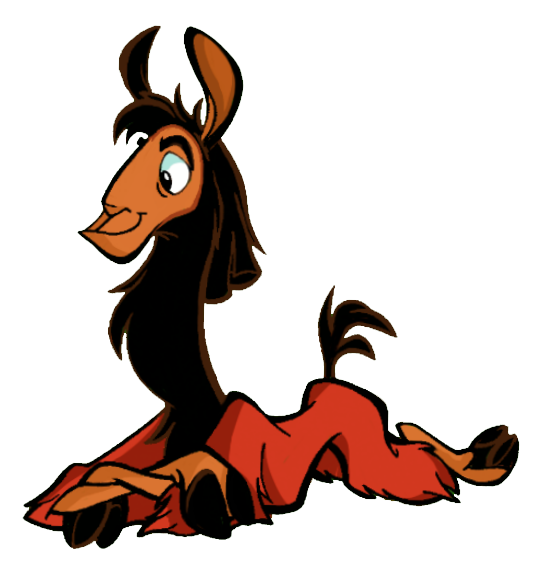

chegando no palácio izma inverteu a ordem das poções para virar animal e voltar a ser humano.
1 - Kuzco toma todos os frascos até conseguir achar o antídoto e volta a ser humano.
2 - Kuzco faz Patcha tomar todos os frascos de poções e passar a ser vários animais até conseguir encontrar o antídoto.